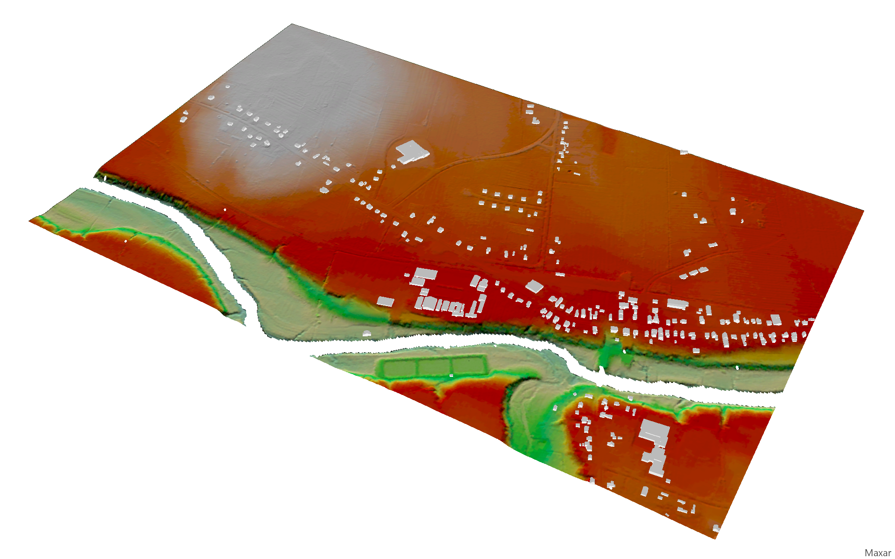

Remote Sensing Image Enhancement Poster
Created for REMS 5001 - Fundamentals of Remote Sensing at NSCC Centre of Geographic Sciences

(Click anywhere to close)
3D Buildings, DEM & DSM from LiDAR Point Cloud
Created for REMS 6090 - LiDAR Applications at NSCC Centre of Geographic Sciences
This project involved creating a digital elevation model (DEM), digital surface model (DSM), and 3D building models from a LiDAR point cloud.
The TerraScan extension for Bentley MicroStation was used to automatically identify LiDAR points corresponding to buildings. Any misclassifications were corrected.
3D building models were created based on the classified LiDAR points, as well as a DEM from the ground-classified points and a DSM from all non-building points.
The project study area was located in Lawrencetown, Nova Scotia.
LiDAR point cloud as displayed in ArcGIS Pro.

DEM derived from LiDAR ground points, with 3D buildings.

DSM derived from LiDAR ground & vegetation points, with 3D buildings.

3D building model of the COGS campus.

3D building models of the Annapolis Valley Exhibition grounds.

View of Main St in Lawrencetown.
(Click anywhere to close)